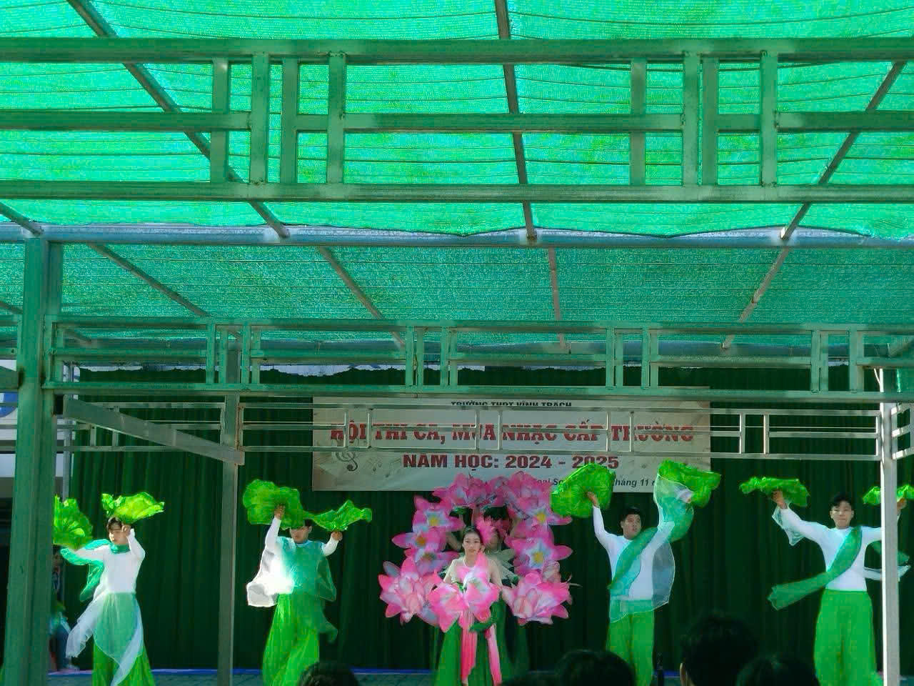

GIỚI THIỆU HOẠT ĐỘNG
Nhân dịp Tết Nguyên Đán, Trường THPT Vĩnh Trạch đã tổ chức nhiều hoạt động mang đậm bản sắc văn hóa dân tộc. Các chương trình không chỉ tạo không khí vui tươi ngày xuân mà còn giúp học sinh rèn luyện kỹ năng sống, tinh thần đoàn kết và sự sáng tạo.
🎤 HOẠT ĐỘNG CA MÚA NHẠC
Chương trình ca múa nhạc mừng xuân là điểm nhấn nổi bật trong chuỗi hoạt động Tết của nhà trường. Những tiết mục được dàn dựng công phu, thể hiện tài năng và niềm đam mê nghệ thuật của học sinh.

Tiết mục văn nghệ mừng xuân do học sinh biểu diễn
Linh Thiêng Việt Nam - Nhạc sĩ Lê Quang - Trình bày Trần Tùng Dương
🧺 HOẠT ĐỘNG BÁN HÀNG RONG
Hoạt động bán hàng rong ngày Tết mang tính trải nghiệm thực tế, giúp học sinh làm quen với kỹ năng giao tiếp, quản lý chi tiêu và tinh thần lao động. Các gian hàng được tổ chức gọn gàng, an toàn và mang không khí Tết truyền thống.

Gian hàng Tết do học sinh tự tổ chức

Không khí mua bán nhộn nhịp trong khuôn viên trường